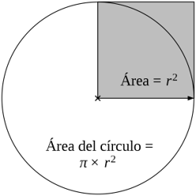

En JavaScript podemos definir una función de dos formas diferentes. Aunque ambas formas sirven para definir bloques de código que se pueden ejecutar más tarde, la diferencia principal radica en cómo se crean y cómo las maneja el motor de JavaScript antes de ejecutar el código.
Se definen usando la palabra clave function. El navegador las lee antes de ejecutar cualquier otra cosa. En consecuencia, se puede llamar a la función antes de la línea donde se escribió y funcionará perfectamente. (A este proceso se le conoce como hoisting.)
Sintaxis
function nombre([parameters...]) {
... instrucciones...
[return valor;]
}
Ejemplo
let x = cuadrado(5);
// ¡Funciona! Aunque la instrucción esté arriba
function cuadrado(numero) {
return numero * numero
}
En este caso, la función se crea y se asigna a una variable (como si fuera un valor). Es la base de las famosas Arrow Functions (funciones flecha).
Las funciones expresadas se comportan como cualquier otra variable. Si se intenta llamar antes de definirla, JavaScript lanzará un error porque la variable aún no ha sido inicializada.
Sintaxis
const variable = function nombre([parameters...]) {
... instrucciones...
[return valor;]
}
Este tipo de funciones puede ser anónima, es decir, la función como tal, no tiene por qué tener un nombre. Cuando las funciones son anónimas se denominan también funciones lambda
Sintaxis (anónima)
const variable = function ([parameters...]) {
... instrucciones...
[return valor;]
}
Ejemplo
let x = sqr(5);
// Nótese que se llaman por su nombre
// ❌ ¡Error! Cannot access 'sqr' before initialization
const sqr = function cuadrado(numero) {
return numero * numero
}
Utilizar funciones expresadas permite crear una función en el interior de una variable, lo que permitirá posteriormente ejecutar la variable (como si fuera una función).
const sqr = function (numero) { return numero * numero }
let radio = 2;
alert(sqr(radio));
// muestra 4
Las funciones expresadas son convenientes cuando se pasa una función como argumento a otra función.
// MOSTRAR EL AREA DE UN CIRCULO
const sqr = function (numero) { return numero * numero }
function areaCirculo(radio2) {
return Math.PI * radio2 ;
}
let radio = 2;
alert(`El area del círculo es: ${areaCirculo(sqr(radio))}`);
// muestra 4

Adicionalmente, las funciones expresadas obligan a tener en orden el código y evitan comportamientos extraños causados por el hoisting.
Las funciones flecha son una forma corta de escribir funciones anónimas expresadas a partir de la versión ECMAScript 6. Para transformar una función expresada en una función flecha se realiza el siguiente procedimiento:
Creamos la función expresada:
const saludar = function () {
alert("Hola gente");
}
Quitamos la palabra function y entre el paréntesis y la llave escribimos => (lo cual forma una flecha)
const saludar = () => {
alert("Hola gente");
}
Si una función flecha solo tiene una línea de código, se pueden quitar las llaves { } y la palabra return (de lo contrario no). JavaScript asume automáticamente que se quiere devolver ese valor.
const saludar = () => alert("Hola gente");
Cuando una función flecha sólo recibe un parámetro se pueden eliminar los parèntesis.
(Si no hay parámetros o hay más de un parámetro, no.). Ejemplo:
const saludo = persona => alert(`Hola ${persona}`);
Para ejecutar una función flecha:
saludar();
// O
saludo('Laurie');
A pesar de todas las ventajas que ofrecen, las funciones flechas son limitadas y no se pueden utilizar en todas las situaciones.
Las funciones flecha () => {} son fantásticas por su sintaxis corta, pero no se diseñaron para reemplazar por completo a las funciones tradicionales. Su comportamiento interno es muy diferente. (Recordaremos estas limitaciones al crear y utilizar clases)
No se pueden utilizar como constructor.
Las funciones tradicionales en JavaScript pueden actuar como "fábricas" de objetos (clases) al invocarlas con la palabra clave new. Al hacer esto, JavaScript crea un nuevo objeto y crea un enlace a su propiedad prototype.
Las funciones flecha no tienen una propiedad prototype y no están diseñadas internamente con la estructura interna para construir objetos.
No tiene sus propios enlaces a this o super y por lo tanto, no se debe usar como método.
En una función tradicional, this se utiliza para referenciar al elemento que dispara un evento.
Al usar una función flecha, this apuntará al objeto global (window), rompiendo el código. Lo mismo ocurre con super (no se puede usar porque las funciones flecha no tienen enlace a super, el cual se usa para heredar clases).
No tiene argumentos ni puede usar la palabra clave new.target.
En las funciones tradicionales, existe un objeto oculto llamado arguments que contiene un array con todos los parámetros que se le pasaron a la función, incluso si no se definieron explícitamente. Las funciones flecha no lo tienen.
La palabra clave new.target, es una propiedad que permite detectar si una función fue llamada como un constructor (usando new).
Dado que las funciones flecha no pueden ser constructores, new.target no existe dentro de ellas. (devolvería un error)
No son aptas para los métodos call, apply y bind, que generalmente se basan en establecer un ámbito o alcance.
Los métodos call(), apply() y bind() existen en JavaScript para permitirte forzar el objeto que queremos que sea el this dentro de una función. Podemos tener una función suelta e indicar: "Ejecútate, pero haz que this sea el Objeto X".
Dado que las funciones flecha tienen un this (estático e inmutable desde que nacen), estos métodos no funcionan con ellas. JavaScript ignorará por completo el objeto que se intente pasarle.
No se puede utilizar yield dentro de su cuerpo.
En JavaScript existen unas funciones especiales llamadas Funciones Generadoras (function*). Estas funciones pueden pausar su ejecución en medio del código mediante la palabra clave yield y reanudarla más tarde.
La sintaxis de las funciones flecha no es compatible con el diseño de los generadores.
No existe tal cosa como un const miGenerador = *() => { }. Por lo tanto, si se intentas meter un yield dentro de una función flecha, JavaScript lanzará un error de sintaxis inmediatamente.
El cambio de comportamiento en las funciones flechas se debe a la sintaxis que se usa para crearla.
Al quitar la palabra clave function y usar la flecha =>, se le estás indicando al motor de JavaScript: "Quiero una función ligera".
Las funciones tradicionales (las que llevan la palabra function) son objetos muy "pesados" internamente. Cada vez que se crea una, JavaScript tiene que crear los siguientes objetos por si acaso se decide usarlos, con el consiguiente consumo de memoria y tiempo de procesamiento:
prototype para poder usarlo con new (en clases).arguments asociado a la función.this cambie dinámicamente según quién ejecute la función.Los creadores de JavaScript se dieron cuenta de que el 90% de las veces no se utilizan constructores, ni arguments, ni un this dinámico que cambie de forma impredecible. Al programar una función, la mayoría de las veces solo se desea programar simplemente un bloque de código.
De allí nacen las funciones flecha las cuales son como una versión recortada y optimizada de una función tradicional. Al quitar la palabra clave function:
prototype, arguments ni lógica interna para this, y por lo tanto es mucho más ligera para el motor de JavaScript.Las características pesadas se pierden a cambio de un rendimiento más limpio y un this predecible que no se rompe cuando se trabaja con asincronía.
Tanto Astro como los frameworks modernos de JavaScript (como React, Angular, Vue, Svelte o incluso en el lado del servidor con Node.js/Express) utilizan en su sintaxis, funciones flecha.
También son usadas por los métodos de array (.map(), .filter(), .forEach(), .reduce(), etc.).